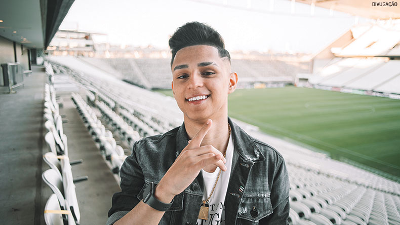
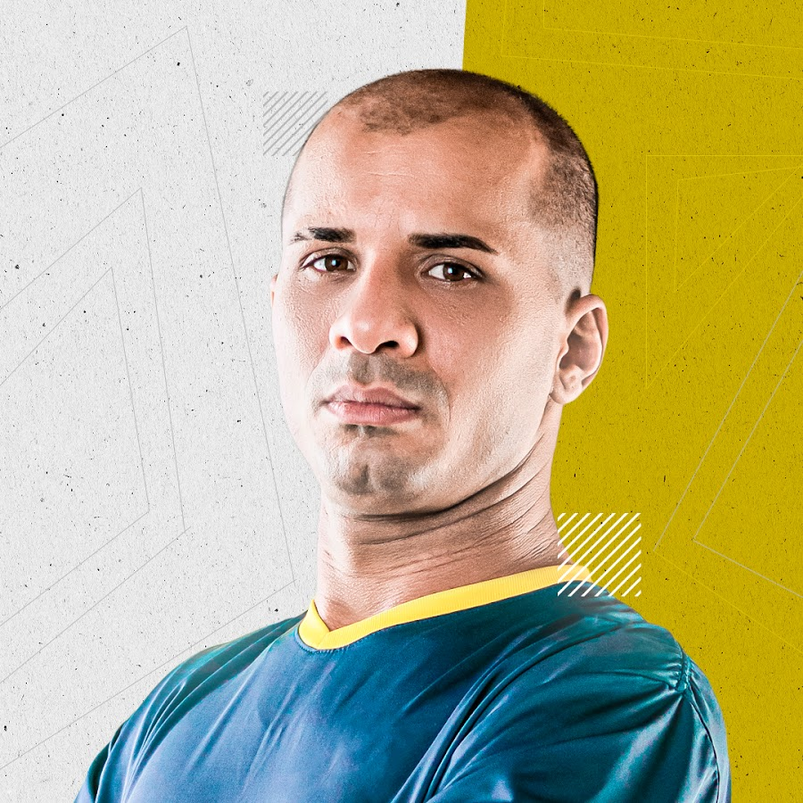

A origem do Free Fire
O game que virou sucesso no Brasil
Criado em 2017, o Free Fire se tornou um dos games mais jogados do mundo. Em 2020, atingiu a marca de mais de 80 milhões de usuários em todo o planeta. No Brasil, ele também se tornou um fenômeno, ocupando a liderança de jogos para celulares.
O Free Fire é um game no estilo "battle royale", em que os jogadores são largados em uma ilha cheia de armas e outros itens. O último sobrevivente é o vencedor. O jogo tem origem no Vietnã, onde foi criado por uma pequena desenvolvedora chamada 111dots Studio. Inicialmente disponível apenas nos servidores do país, ele começou a fazer sucesso por ser leve e acessível, rodando em celulares intermediários.
Em dezembro de 2017, a Garena, gigante empresa de Games de Singapura, adquiriu os direitos de publicação do Free Fire Battlegrounds. Um mês depois, o game era líder de downloads em 22 países, incluindo o Brasil. Além disso, ele rapidamente se consolidou entre os cinco mais baixados em outros 50 países.
O jogo fez tanto sucesso no Brasil que na América Latina existe um servidor exclusivo para cá e outro para os demais países, como Argentina, México e Colômbia. Neste sábado, a partir das 19h, a página do HISTORY no Facebook transmite com exclusividade a final do Torneio Amador de E-Sports do BIG Digital, edição online do BIG Festival. São duas competições separadas: uma para Free Fire e outra para Brawl Stars
.
Garena Free Fire é um jogo eletrônico de ação-aventura do gênero battle royale visto numa perspectiva em terceira pessoa. Para começar a jogar, é necessário criar uma conta pessoal, na qual você pode escolher se deseja criar uma conta própria do jogo ou se deseja conectar-se com alguma rede social, como o Facebook. Após efetuar o login, o jogador deve configurar seu perfil e explorar o jogo afim de obter conhecimento sobre a jogabilidade. Enfim, o jogador inicia uma partida clicando no botão “Modo Clássico” ou "Partida Ranqueada".
Enquanto o avião sobrevoar sobre a ilha, o jogador pode pular onde desejar, possibilitando, assim, que escolha um local estratégico para pousar longe dos inimigos. Após pousar, o jogador deve sair em busca de armas e itens utilitários. Equipamento médico, armas de médio e grande porte, armas brancas, granadas, colete à prova de balas, capacete de proteção, mochila, dentre outros itens podem ser encontrados pela ilha. O objetivo do jogador é sobreviver numa ilha com 50 integrantes online, abatendo os adversários encontrados pelo caminho.
Como o Free Fire está nos dias de hoje
Nos dias de hoje, o Free Fire está totalmente mudado. Invés de um jogo que o pessoal joga com os amigos, sem se importar com nada, o jogo acabou-se voltando a competições, tanto aqui no Brasil, tanto no mundo lá fora.
Existem muitos jogadores aqui no Brasil que jogam Free Fire (Streamers,jogadores profissionais, amadores, aqueles que jogam por diversão e aqueles que treinam duro, para que no futuro, se tornar "o melhor". A maioria dos jogadores não tem condições finaceiras, domésticas etc para poderem ajudar a família, pot isso que eles vêem o Free Fire como esperança, uma oparotunidade para melhorar as condições em casa. Entretanto, a maioria dos jogadores profissionais de Free Fire, vieram de condições ruins.
Podemos dar exemplos como:
Bruno "Nobru" Goes

Bruno Goes, mais conhecido como Nobru, tem 19 anos e é atleta de Free Fire, o game mobile mais popular e mais baixado do mundo nos últimos dois anos. Em 2019, foi campeão mundial defendendo a equipe de e-sports do Corinthians e eleito o melhor jogador do planeta na modalidade. Antes disso, no entanto, em uma rara jornada que mistura a carreira de pro-player com a de streamer (profissional que faz lives jogando), o atleta já colecionava uma legião de seguidores. Hoje tem 9,9 milhões de inscritos em seu canal no Youtube, 6,5 milhões de seguidores no Instagram, 483 mil no Twitter, 647 mil no Tik Tok e mais de 1,5 milhão na plataforma de streaming de games Twitch. Unindo carisma, suas habilidades como comunicador e desempenho esportivo, é como se Nobru fosse ao mesmo tempo Neymar e Galvão Bueno, traçando um paralelo com o mundo do futebol. Com tamanho alcance e engajamento, o atleta não apenas virou uma marca forte, que tem atraído empresas, patrocínios, projetos e novos negócios, como se tornou o mais popular embaixador dos e-sports no Brasil. Ele tem parcerias com Twitch, Ame Digital, Oi e Discord e participou de campanhas com Netflix, Banco Next e Rappi.
Como você divide a rotina de pró-player com a rotina como streamer?
"Geralmente as pessoas escolhem entre ser pro-player ou streamer, porque é muito complicado conciliar as duas coisas. Mas é o que eu faço. Treino e disputo competições com o Corinthians e faço as minhas lives. Muitas vezes eu unifico as duas coisas porque muita gente quer ver como funciona a vida de um atleta de e-sports. E daí então eu também faço algumas transmissões dos nossos treinos, por exemplo. Não é uma rotina fácil e no começo, antes do Corinthians, eu já cheguei a ficar em média 15 horas por dia jogando. Com a evolução e o crescimento da minha carreira, essa gestão do tempo, da rotina e da minha imagem também foi evoluindo. Hoje estou mais preparado para tudo isso".
Quais são as principais fontes de receita da sua carreira?
"Hoje em dia é possível monetizar de várias formas o meu trabalho. Além do salário que recebo, como atleta profissional do Corinthians, temos os recursos das plataformas digitais. No Instagram, com o engajamento que consegui atingir, atraímos diversas marcas por meio de parcerias e patrocínios. Com o Youtube, existe a monetização por audiência, doação e super chats (quando um seguidor paga para destacar seus comentários) em lives que alcançam até 100 pessoas simultaneamente. No Twitch, eu também recebo pelas pessoas me assistindo, pelo contrato que tenho com a plataforma, pelas doações e com anúncios. Fora isso, começaram a surgir alguns projetos de marcas e campanhas no caminho. É uma renda muito boa e eu não sei se eu fosse jogador, seria tão bom para receber o que eu recebo hoje".
Ver mais
Edson "God" Silva

Natural de Quipapá, interior de Pernambuco, Edson Silva (ou melhor, God Wins, ou ainda melhor, Hunter Godbr) já é um nome cuja história o torna conhecido para muitos na comunidade gamer.Com mais de 1 milhão e meio de inscritos em seu canal do Youtube, Edson God é um dos grandes Pioneiros de Free fire no Brasil. Foi Top Global no Duo (o jogador com maior número de vitórias no mundo no modo duplas) em três temporadas. Criou a Guilda God que revelou “quase metade do cenário competitivo atual”, de acordo com ele.
Você é considerado o pioneiro do Free Fire no Brasil, como iniciou sua história no cenário E- Sport?
"Sou o Edson, mais conhecido como GOD WINS do Free Fire, jogo que gero conteúdo e compartilho pelo meu canal no Youtube, o Hunter Godbr. Recentemente, alterei o nome do canal para 'GOD WINS', por conta da facilidade nas pesquisas. Fui o primeiro streamer de Free Fire e um dos que acreditamos não ter potencial do jogo. Depois de muito esforço e dedicação, iniciei uma fase global."
Como você vê atualmente o cenário do E- Sports no Brasil para o cenário de quando iniciaste? Hoje em dia há uma facilidade maior para os gamers e streamers crescerem?
Neste ano, vejo o ambiente totalmente modernizado. Hoje existem jogadores de altíssimo nível na competição e ainda acreditam que há muito mais para descobrir e crescer. Devido à concorrência, existem muitas pessoas talentosas que estão em níveis tão normais que me deixa encantado. A facilidade em alcançar altos patamares é relativo; pois há várias formas de crescimento nos jogos.
Atualmente, a sua equipe GOD E- SPORTS, especializada em Free fire, se encontra na série A. Quais as expectativas da equipe para 2021?
A GOD E-SPORTS revela a honra de revelar os melhores jogadores do cenário competitivo e influenciador. Contamos com a presença na série A da LBFF da Garena - um dos times que mais possuem torcida no Brasil. Nossas expectativas para 2021 é maravilhoso chegar ao topo e apresentar trabalho.
Ver mais